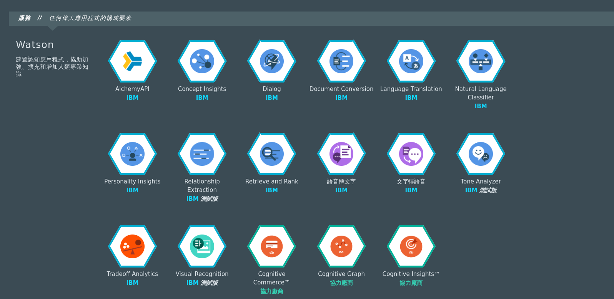
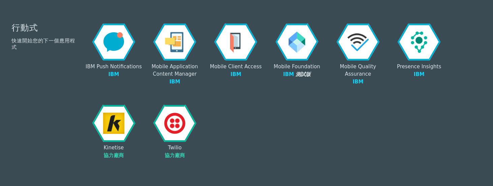
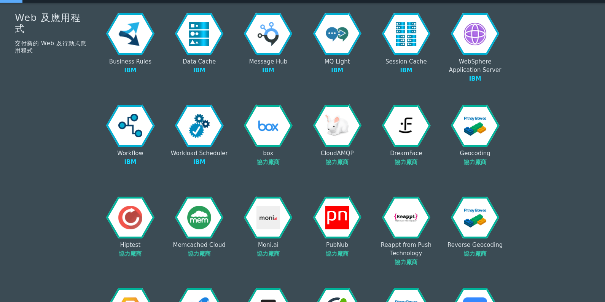
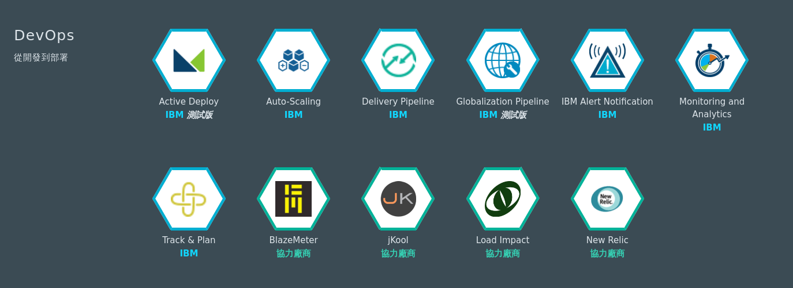
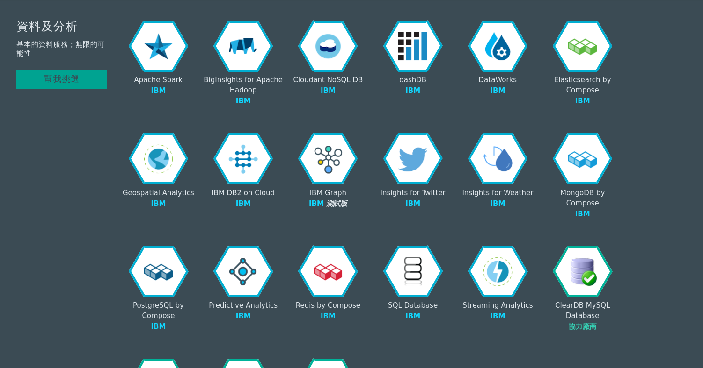

網址： https://console.ng.bluemix.net/
IBM Bluemix是一由IBM所開發的開放雲端平台， 目的是希望提供開發者一個方便、快速設計的平台， 同時也讓企業可以更好的整合各種不同的平台服務， Bluemix有提供各式各樣的雲服務與API， 也包含各種虛擬機器以及資料庫。
bluemix_service
Bluemix上有許多方便又好用的API可以取用， 例如：物連網、Watson認知運算、行動式開發、Web開發、資料分析...等，     
有些是IBM自己研發的， 也有一些是跟其他協力廠商合作， 另外Bluemix也允許使用者自己製作自己的API， 也就是說使用者可以在同一個平台上一次整合不同API的功能， 真的是相當方便。
同時Bluemix對於語言的支援度也是相當用心， 基本上大部分主流的語言都有支援， 其背後也有相當的社群及文件。 
使用者必須註冊Bluemix帳號才能取用Bluemix上的服務， 每一個帳號都能免費試用30天， 並能存取2GB的記憶體及儲存器， 對於每一個不同的服務Bluemix也有不同的收費規定， 好比說使用前幾萬